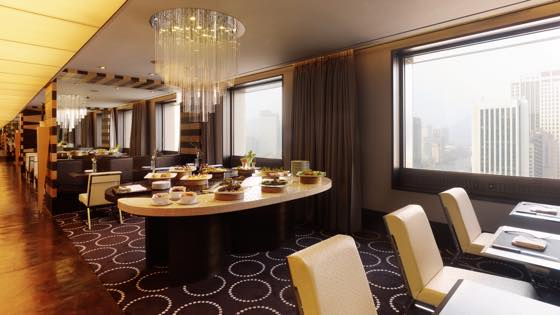

*사진출저는 요기: http://www.hoteltheplaza.com/
뉴욕에서 니나노 놀고있을때 C군(영쿡사람)에게 연락이 왔다. 일때문에 다음주 서울갈거같은데 시간되믄 커피나 마시자믄서 ㅋㅋ
아니 이런 기막힌 타이밍이 ㅋㅋㅋ
C군은 M군 막내여동생의 남자친구로 최근 둘은 약혼을 했다.
Immigration, border쪽 일을 한다고 하는데 본인은 자길 007 제임스본드로 여겨주길 바란다고 ㅋㅋㅋㅋㅋㅋ
플라자 호텔에 묵고 있다고 여기 오믄 free coffee 가능하다고 해서 ㅋㅋ 일끝나는 시간 맞춰서 찾아갔음.
만나기전에 내일 비행기타는데 약혼 축하 겸 선물이나 하나 사야겠다 싶어서 롯데백화점에 들렀다.
닥마를 신고 나갔는데 오른쪽 발에 작은 돌이 들어갔는지 걸을때마다 걸리적 거리는 거임
귀찮아서(......) 열심히 무시하고 있다가 벤치에 앉아서 신발을 벗어보니 이 돌이 꽤 뾰족했던지 ㅋㅋㅋㅋㅋㅋ 양말 엄지발가락쪽에 구멍이 크게 나있고 피투성이(......)가 되어있었음 ㅋㅋㅋㅋㅋㅋㅋㅋㅋㅋㅋㅋㅋ 새양말인데 ㅜㅜ 흑 ㅜㅜ
나능 내 직업이 책상에 찰싹 달라붙어서 종일 컴퓨터만 붙잡고 있는거라 이렇게 출장 많이 다니는 일 하는 사람보면 넘 신기한데. 막상 본인들은 너무 힘들고 싫다고 한다. 동생곰도 국내 / 중국 정도 출장을 자주 다녀야 하는 직업이라 친구들에게 '모텔왕' 이라는 별명을 얻었는데 ㅋㅋㅋㅋㅋㅋㅋㅋㅋㅋㅋㅋㅋㅋㅋ 늠 힘들다고 ㅋㅋㅋ
내가 아니 왜? 회사돈으로 비행기타고 이나라 저나라 가보고 좋지않아? 라고 물어보면
예를들어 런던에서 이태리나 독일 등 근처 나라로 출장을 갈 경우 그나라 업무시작 아침 9시에 맞춰서 도착해야 하기때문에
(물론 회사돈이지만) 새벽 4시에 집에서 택시를 타고 공항에 가서 비행기를 타고 그나라 시간 오전9시에 도착해서 바로 업무시작
실질적으로 9 to 5 근무하는데 하루 시작을 새벽4시에 하는 상황이라고 설명해 줬다 (또다른 지인은 그렇게 다른나라 출장가서 일하고 당일날 돌아와서 다시 회사에 복귀해서 일한적도 있다고;;) 이게 내가 생각하는 오전시간에 널널하게 비행기타서 댕겨오는 그런게 아니었음 ^^;;;;
그리고 다른나라 왔다 한들 와서 종일 일하고 / 바쁘면 8시까지 일해야 하고 하니 실질적 관광 같은건 생각도 못하고
걍 호텔주변 음식점 혼자가서 비빔밥 같은거 먹었다고 한다 ㅋㅋㅋㅋㅋㅋㅋ 해외출장이란게 이런거였군 ㅋㅋㅋㅋㅋㅋ
*목욜날 회사동료랑 DMZ 투어 갔다왔다고 이야기하는데 정확히 내가 M군이랑 댕겨온거랑 똑같아서 굉장히 반가워했음 ㅋㅋㅋㅋ 아마 외쿡인들이 보기에 DMZ 투어만큼 이상한건 없다고 생각한다 ㅋㅋㅋㅋㅋㅋㅋㅋ
이분도 홍콩 - 도쿄 를 들려서 서울 찍고 낼 아침 비행기로 런던 돌아간단다. 그리고 월요일부터 다시 로동 복귀 (하고 일주일 후에 다시 파나마 간다고;;;;)
해서 8월에 워싱턴으로 근무 지역을 바꾼다며 최소 2년은 지낼 예정이라 함. 워싱턴으로 가면 더이상 출장 이렇게 빡시게 안다녀도 된다고 매우 기뻐했음 ㅋㅋㅋㅋ (순간 아 그래? 그럼 놀러가야지 라고 생각하는 나님 ㅋㅋㅋㅋㅋㅋ)
덕분에 클럽라운지 가서 잘 얻어먹고 왔네요 :3
조용하고 전망좋고 밖에나가면 명동거리 / 시청 앞은 항상 바쁘고 사람이 많은데 갑자기 차분해진 느낌이 늠 좋았습니다.
여기 라운지 이용하고 싶어서 호텔 투숙하고 싶을 정도 ^^;;;;;
귀여운 케키랑 과일도 있었지만 점심먹으러 나갈 생각이어서 패스
커피마시고 롯데백화점 13층 식당가로 이동. 한식당을 갈까 뭘 먹을까 고민했는데 맵지도 않고 가장 무난한 메뉴라 생각해서 삼계탕 선정 ^^
그리고 어쩌다보니 이것도 얻어먹게 되었습니다.......OTL
계산할려고 하니까 내일이면 비행기 타는데 한국돈 남은거 써야한다면서 이거 어짜피 내 보스에게 받은 돈이야 ㅋㅋ 회사돈이니까 밥값으로 써야해 이러믄서 계산하심. 대따 미안해져서 헐;; 님은 방문객이니 원래 내가 밥사야하는거 아님? 우이되었든 thank you for the lunch 라고 말하니
you can thanks for the UK government (=C군 직장) 라고 해서 빵터짐 ㅋㅋㅋㅋㅋ
덕분에 명동 나간거 여기저기 구경하고 카페들어가서 커피한잔 더 마시면서 그림그리다 돌아왔습니다 :3
이렇게 서울서 만나니 신기하네욤.